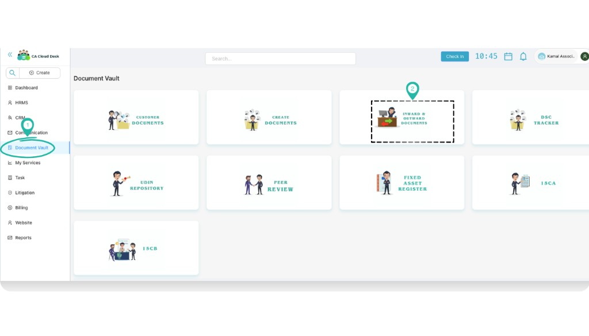
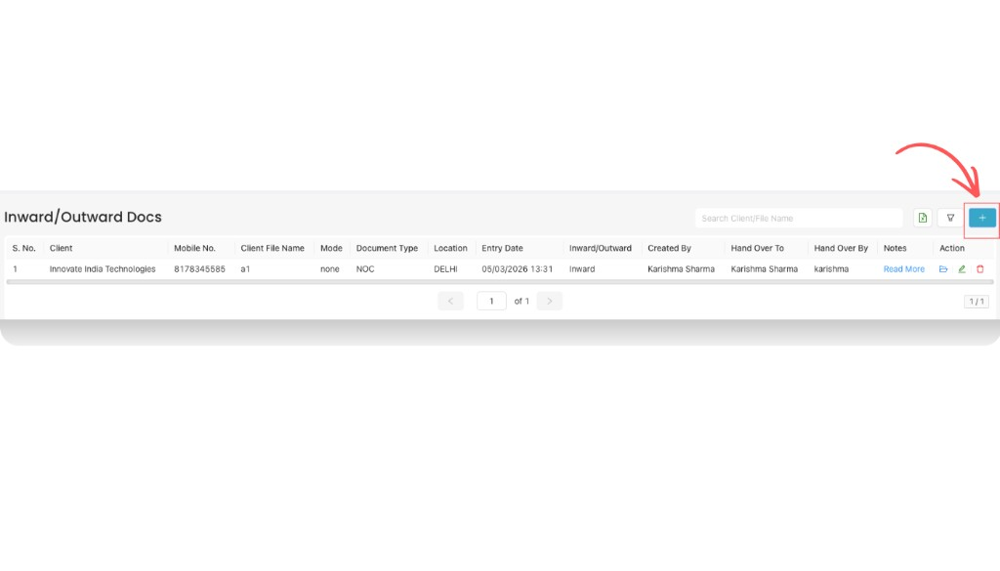
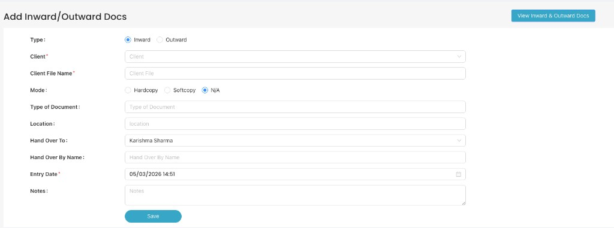
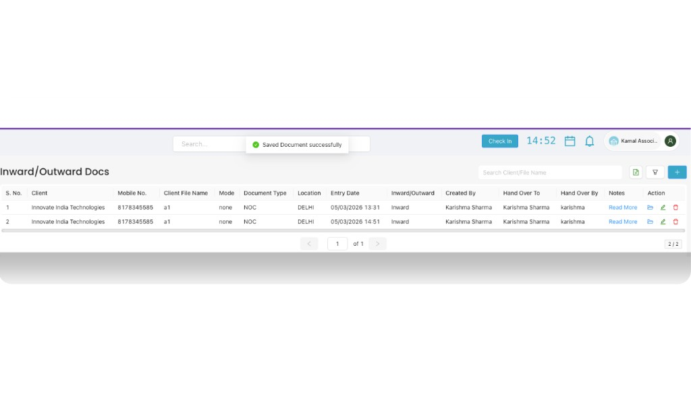
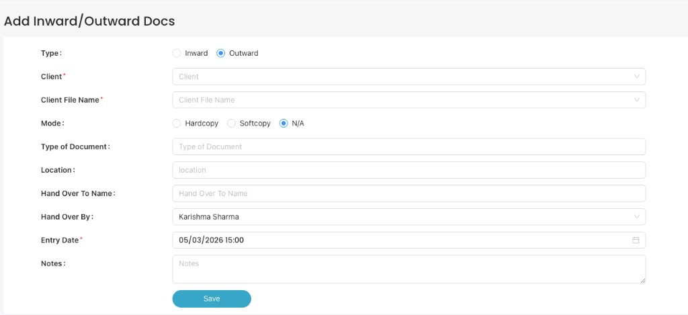

Inward & Outward Document
Use the Inward & Outward Document module to maintain a proper register of all documents coming into and going out of your office. Each entry is linked with a client, document type, mode (hardcopy/softcopy), location, and handover details so your team always knows where a document is and who handled it. Use the View PDF Guide button in the left sidebar to open the full guide in a new tab (same as opening a downloaded PDF).
Overview
After you log in to CA Cloud Desk, you can open Document Vault → Inward & Outward Documents to:
- Record when a document arrives from a client or third party (Inward).
- Record when a document is sent out or handed over to someone (Outward).
- Capture who handed over and who received the document, along with the date, mode, and location.
This works as your central document movement register inside CA Cloud Desk.
Login and Open Inward & Outward
- Login to your CA Cloud Desk account.
- From the dashboard, on the left panel click Document Vault.
- On the Document Vault screen, select the card named Inward & Outward Documents.
You will see the Inward/Outward Docs list with existing entries and a “+” button on the top-right to add a new record.

From the dashboard, click Document Vault from the left panel.

On the Document Vault screen, choose the Inward & Outward Documents card.
Create an Inward Document
- On the Inward/Outward Docs list, click the “+” button on the top-right.
- The Add Inward/Outward Docs form opens.
- Under Type, select Inward.
- Fill the remaining fields (see field-wise explanation below) and click Save.
After saving, the new Inward entry appears in the list with status Inward.

Inward/Outward Docs list – click the plus (+) button to add a new entry.

Add Inward/Outward Docs – select Inward and fill all required details, then click Save.

After saving, the new Inward document is added to the list with a success message on top.
Create an Outward Document
- On the Inward/Outward Docs list, click the “+” button.
- In the Add Inward/Outward Docs form, under Type select Outward.
- Fill the same details as Inward (Client, Client File Name, Mode, Type of Document, Location, etc.).
- In addition, make sure you correctly enter the Hand Over To Name and Hand Over By for outward movement.
- Click Save. The Outward entry is added to the list with status Outward.

For Outward documents, select Outward and carefully fill Hand Over To Name and Hand Over By.
Field-wise Details (Inward & Outward)
The form for Inward and Outward is almost the same. Use the table below to understand each field:
| Field | Used In | What to enter |
|---|---|---|
| Type (Inward / Outward) | Both | Select whether you are recording a document coming into the office (Inward) or going out (Outward). |
| Client | Both | Choose the client for whom this document belongs from the client dropdown. |
| Client File Name | Both | Enter or select the client file name / file code (for example, a1, GST-2025). |
| Mode (Hardcopy / Softcopy / N/A) | Both |
Choose how the document is available:
|
| Type of Document | Both | Specify what kind of document it is (for example, NOC, Agreement, Income Tax File). |
| Location | Both | Mention where the document is kept or from where it is being received/sent (for example, DELHI, Head Office, Branch – Mumbai). |
| Hand Over To Name | Mainly Outward | Name of the person / department to whom you are handing over the document (for example, client name, staff name, courier person). |
| Hand Over By / Hand Over By Name | Both | Name of the person from your office who is handing over or receiving the document (for example, Karishma Sharma). |
| Entry Date | Both | Date and time when you are creating this entry (for example, 05/03/2026 15:00). This becomes the reference for future tracking. |
| Notes | Both | Any extra information you want to store – for example, envelope number, courier tracking number, special instructions, or remarks. |
View and Manage Inward/Outward Entries
All saved entries appear in the Inward/Outward Docs list.
- Use the search box on the top-right to search by Client or Client File Name.
- Use filters (if available) to narrow down by Type, Entry Date, or other columns.
- The table shows key details like Client, Mobile No., Client File Name, Mode, Document Type, Location, Entry Date, Inward/Outward, and Created By.
From the Action column you can typically edit or delete an entry if any detail changes.